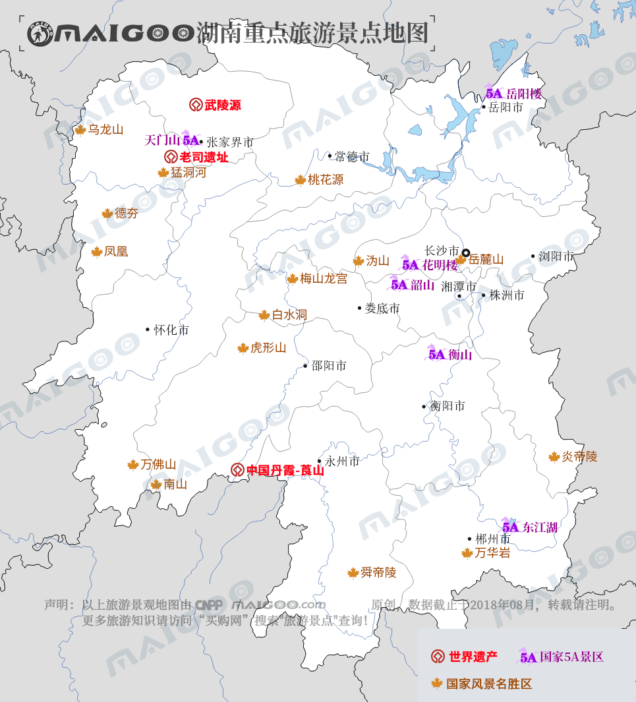

| | | | | |
| - | - | - | - | - |
|<b>别名</b>|湘、楚、湘楚、潇湘、三湘、三湘四水||<b>著名景点</b>|张家界/衡山/岳麓山/岳阳楼/炎帝陵/凤凰古城/韶山/崀山/东江湖等|
|<b>行政区类别</b>|省级行政区||<b>机 场</b>|长沙黄花国际机场、张家界荷花国际机场等|
|<b>所属地区</b>|中南地区，华中地区||<b>火车站</b>|长沙站、株洲站、衡阳站、怀化站、娄底站|
|<b>下辖地区</b>|13个地级市、1个自治州||<b>车牌代码</b>|湘A-湘U|
|<b>电话区号</b>|（+86）0730-0746||<b>GDP</b>|34590.56亿元（2017年）|
|<b>邮政区码</b>|410011-427000||<b>人均GDP</b>|50422元|
|<b>地理位置</b>|中国中南地区、长江中游、洞庭湖以南||<b>历史名人</b>|毛泽东、贺龙、曾国藩、魏源等|
|<b>面 积</b>|21.18万平方千米||<b>著名高校</b>|湖南大学、中南大学、国防科大|
|<b>人 口</b>|6860.2万人（2017年）||<b>党政领导</b>|省委书记：杜家毫，省长：许达哲|
|<b>方 言</b>|湘语、西南官话、赣语、客家语、湘南土话等||<b>行政区划代码</b>|430000|
|<b>气候条件</b>|大陆性中亚热带季风湿润气候||-|-|
| <b>湖南生活文化</b> | <b>湖南特色文化</b> | <b>湖南曲艺文化</b> | <b>湖南建筑文化</b> | <b>湖南宗教文化</b> |
| - | - | - | - | - |
| <a href="javascript:;" onclick="live(this);">习俗/民俗</a> | <a href="javascript:;" onclick="feature(this);">滩头年画</a> | <a href="javascript:;" onclick="art(this);">湖南湘剧</a> | <a href="javascript:;" onclick="building(this);">湖南传统建筑</a> | <a href="javascript:;" onclick="religion(this);">湖南道教文化</a> |
| <a href="javascript:;" onclick="live(this);">方言文化</a> | <a href="javascript:;" onclick="feature(this);">蚕灯舞</a> | <a href="javascript:;" onclick="art(this);">湖南祁剧</a> | - | - |
| <a href="javascript:;" onclick="live(this);">节日文化</a> | <a href="javascript:;" onclick="feature(this);">土家族摆手舞</a> | <a href="javascript:;" onclick="art(this);">湖南花鼓戏</a> | - | - |
| <a href="javascript:;" onclick="live(this);">嫁娶文化</a> | <a href="javascript:;" onclick="feature(this);">新化山歌</a> | - |-|-|
| <a href="javascript:;" onclick="live(this);">饮食文化</a> | <a href="javascript:;" onclick="feature(this);">瑶族长鼓舞</a> | -|-|-|
| <a href="javascript:;" onclick="live(this);">湖南禁忌</a> | <a href="javascript:;" onclick="feature(this);">宝庆竹刻</a> |-| -|-|
|-| <a href="javascript:;" onclick="feature(this);">湖南非物质文化遗产</a> |-|-|-|
## <i class="fa fa-file-text-o"></i>&nbsp;目录（Table of Contents）
+ [I. 总路线图（暂无）](#one)
+ [II. 景点](#two)
+ [III. 路线规划（暂无）](#three)
<h2 id="two"><i class="fa fa-star-o"></i>&nbsp;景点</h2>
